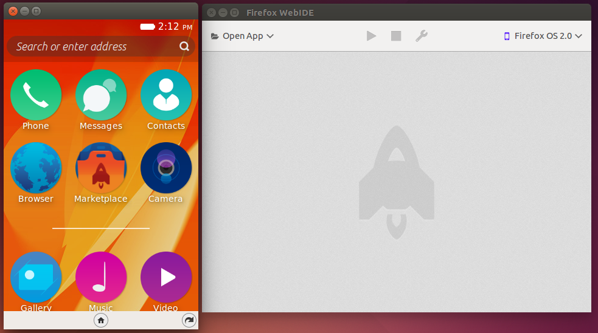
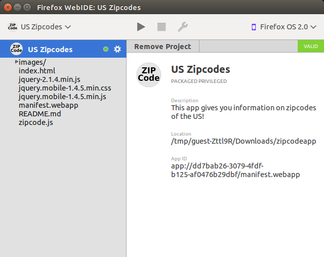

3. Working with the WebIDE¶
Welcome to Episode 3 of the Firefox OS App Development Tutorial. This episode is about digging deeper into the Firefox OS WebIDE and learning how to debug Firefox OS Apps.
3.1. Prerequisites¶
- You have setup your machine with the Firefox OS Simulator. If not you can check out Overview and Development Setup, which takes you through the entire setup.
- You have installed the zipcodeapp that we covered in Hello World. This tutorial uses that as an example, but if you have any other application installed in the Firefox WebIDE, then you should be able to follow along. But I strongly suggest getting the zipcodeapp source code from Github, and installing it as discussed in the previous episode.
3.2. What we shall cover in this Episode¶
- Using the Firefox WebIDE.
- Starting/stopping the simulator.
- Adding and removing applications.
- Observing manifest errors.
- Refreshing an application.
- Using Firefox Dev Tools to view console output.
- Debugging your Firefox OS app.
3.3. Using the Firefox WebIDE¶
To start the WebIDE open up Firefox and click on the icon in the top right that looks like a globe behind a pencil or simply press shift+F8 and the WebIDE will open in a new window.
3.4. Installing and Connecting to a Simulator¶
To install the simulator, navigate to the top right button called Select Runtime and a dropdown menu should be appear.
Click on Install Simulator and install the latest stable version of Firefox OS.

Returning to Select Runtime now shows the simulator in the menu.

Clicking on Firefox OS 2.0 launches the simulator.
To stop the simulator, simply close the window. To start it again, simply select it from the Select Runtime menu in the upper right of the WebIDE.
3.5. Connecting a Real Device¶
To connect a real device to the WebIDE via USB, you have to have the developer menu turned on and ADB and Devtools selected under Debugging via USB. https://developer.mozilla.org/en-US/Firefox_OS/Debugging/Developer_settings has more information on this.
Next just connect your phone to the computer running WebIDE with a USB cable. You should then see the device listed under the Select Device menu.
..index:: Installing/removing apps
3.6. Adding and Removing an Application¶
To install an app on a device, either the WebIDE or an actual device, do the following:
Select Open App -> Open Packaged App... and navidate to the source directory containing your packaged app.
Click the Open button. The WebIDE will then read the manifest, validate it.
Click the triangle icon to deploy the app.


The app is now installed and ready for use.

If you want to remove an application, you will find a X icon next to each application when the icon is held down as shown in the screenshot below. Simply click that and your application should get removed from the simulator.
3.7. Observing Manifest Errors¶
The manifest.webapp file as we have learned so far is the single most important file for your web application. It contains meta information about your application and is used by the OS to learn about the app, its permissions, the different icons, and the launch URL. There are mandatory and optional elements and the OS Simulator does a good check of determining if you have missed out something. If you have, it throws back the errors at you right in the dashboard at the time of adding or refreshing the application.
Try out the following: open up your manifest.webapp file in the editor and remove the name element. Try to add or refresh the element, and notice that the simulator is not too happy with what you have done. It will throw back a validation message. A sample screenshot of the error is shown below:
Manifest errors are common. It is normal to make mistakes here since you might be using a text editor to type in things. Errors could range from XML validation errors to missing out of mandatory parameters, etc.
Correcting the errors is as simple as rectifying the mistakes in your manifest.webapp file and then refreshing the app. It’s as simple as that.
3.8. Refreshing an Application¶
A normal development cycle will involve incremental development. You will develop a screen or functionality, see it work within the simulator and move on to the next one and so on. You need a quick way or refreshing or reloading your application into the OS Simulator. It couldn’t be easier with the Firefox OS Simulator. All you need to do is make your changes in the WebIDE as you have been doing and then click on the refresh button located at the top.
The Simulator will reload and relaunch your application. It will also reload the manifest.webapp file and validate it for you before it reloads your new version.
3.9. Using Firefox Dev Tools¶
When was the last time that you wrote an application that did not have errors or did not involve debugging? Never… correct? It is time that you get familiar with the Developer Tools that are shipped within the Firefox Browser itself. While going into the details of the Developer Tools, it is suffice to cover it briefly here. Then, at the very least, you can start putting in console or logging statements to understand and help you debug what could be going on in the application. The developer tools can also be used to do things like monitor the network traffic, see the HTTP request/response, change styles for the HTML Elements and much more.
To open up the Developer Tools for your particular Firefox OS Application, all you need to do is click on the wrench button located at the top of the WebIDE. In this case we are doing it for the Zipcodes application:
When you click on the wrench, it will open up the Dev Tools window in your browser as shown below and will allow you to monitor your application and easily debug it.
The screenshot of the Dev Tools is shown below:
Now, when we run the application in the OS Simulator by entering a few ZIP codes and get the result, you will see that network calls are traced. Additionally any console.log statements that you would have used in your code (and which we did for printing out the result) will be seen in the output too. This is very useful for understanding what is happening at different stages in your application.
You will notice from the screenshot below that it also shows the line number of the file (zipcode.js:19) which had in the console.log statement in your code. If you click on the hyperlink of the filename:linenumber, it will even open up your code at that exact point.

For more information on Dev Tools, visit Developer Tools note on the Mozilla Developer Network.
3.10. Debugging a Firefox OS App¶
Now comes the interesting part. We shall see how to use Developer Tools to help debug the application. By debugging an application, we mean not just putting console.log statements but breakpoints and single-stepping through your code line by line. Just like you would in any other Developer IDE (Integrated Development Environment).
Follow the steps below patiently. We will assume that you have launched the ZIP codes application locally and it has come up with its first screen on the OS Simulator.
Make sure you have started your Firefox OS App as explained in the earlier section. Go to the Debugger tab as shown below:
You shall see that the index.html page is highlighted and the source code is visible in the pane to the right. What we are going to do now is to put a breakpoint in some section of our code. We shall put the breakpoint right at the point where we receive the response from our call to the public API. Fair enough?
On the right side of the pane, where you see the code, scroll down a bit till you come to the section as shown below:
Go ahead and tap in the gutter near line 19 in zipcode.js. When you tap on it a circular icon should appear, which means that the breakpoint is set. If you tap again on that, it will toggle and the breakpoint will be cleared. Just like any other Debugging environment that you have worked with.
Once again, just for the sake of repeating, we have put the breakpoint on line 19, which is where we have placed our console.log statement.
Now, switch over to your OS Simulator, which is running the Zipcodes App and enter the ZIP code 90210 (a valid US ZIP code) as shown below. Click on the Search button.
You will notice that in your console, nothing is logged and the ZIP code information is not deisplayed because the Application execution will halt at the breakpoint. Switch over to your Dev Tools view and you will see the application execution waiting for you as shown below:

{kind=link}
{kind=link}
{kind=link}
{kind=link}
{kind=link}
{kind=link}
{kind=link}
{kind=link}
To continue executing the code, simply click the play button shown in the top left corner.
3.11. Next Steps¶
I encourage you try out debugging because it will be needed as you progress along in your Firefox Apps. Put in some breakpoints, single step through the code, inspect some variables, etc.
3.12. Coming up Next¶
The next episode cover Firefox Marketplace and the steps to submitting and publishing your Firefox OS Application.